Стилі. Заголовки. Структура документу.
Стилі.
Стилі в Microsoft Word являють собою досить потужний інструмент для роботи з текстом документа, а саме: дозволяють автоматизувати оформлення тексту, створювати структуру або вміст документу.
В текстовому редакторі стилі розділені за призначенням – назва документа, заголовки, підзаголовки, посилання, виділення тощо.
В Word є п'ять типів стилів:
- стилі символів – застосовуються до одного чи більшої кількості виділених символів;
- стилі абзаців – задають оформлення поточному абзацу;
- зв’язані стилі – в залежності від вибору застосовується або до абзацу, або до виділених символів;
- стилі списків – застосовуються як до маркерів або номерів списку, так і до тексту списку;
- стилі таблиць – застосовуються як до самої таблиці, так до тексту що в ній знаходиться.
Застосувати стиль до тексту можна наступним чином:
- поставити текстовий курсор в середину абзацу або виділити частину тексту, до якого буде застосовуватися стиль;
- на вкладці Home (Головна) у групі Styles (Стилі) розгорнути галерею стилів та обрати з переліку необхідний.
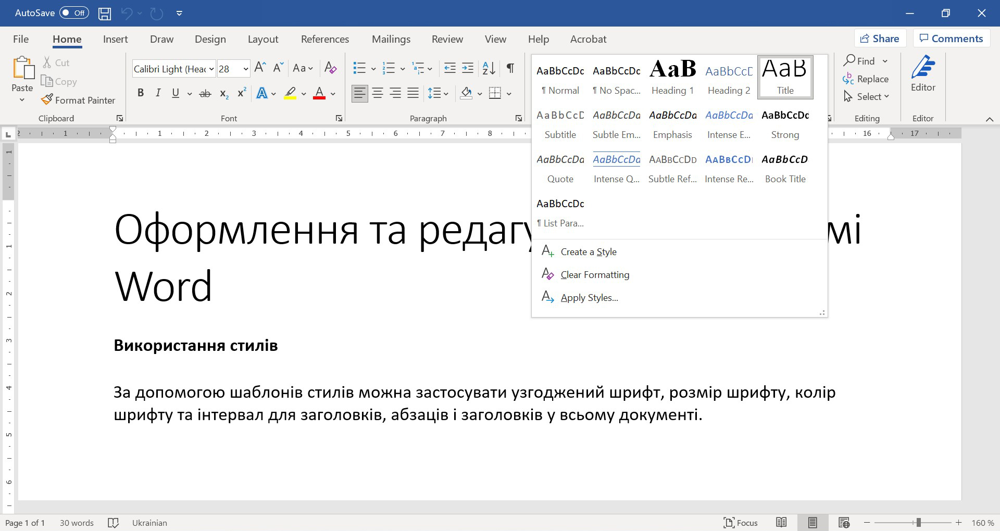
Відмітимо, що в галереї стилів, за замовчуванням, відображені лише рекомендовані стилі, для того щоб переглянути усі наявні в програмі стилі треба:
- відкрити меню розділу Styles (Стилі), в правій частині вікна програми з’явиться відповідна панель, натиснути на кнопку Options (Параметри);
- у вікні Style Pane Options (Параметри області стилів) із списку Select styles to show (Вибір відображуваних стилів) обрати пункт All styles (Усі);
- натиснути на кнопку ОК.
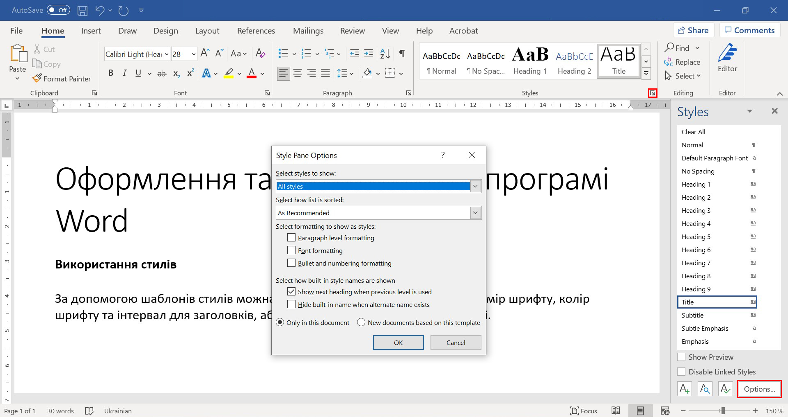
Зверніть увагу на символи біля кожного стилю, вони вказують, до якого об’єкта в документі (абзац або символ) може бути застосований даний стиль.
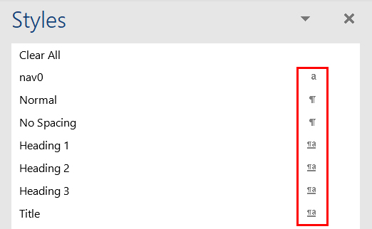
Зміна формату стилю.
Напевно, бувають випадки, коли стандартні стилі не зовсім підходять до оформлення документу, в такому разі їх можна легко змінити, тим більше що це можна зробити декількома способами.
- на вкладці Home (Головна) у групі Styles (Стилі) розгорнути галерею стилів або перейти до меню розділу Styles (Стилі);
- кліком правої кнопки миші викликати контекстне меню стилю, який потрібно змінити;
- серед пунктів меню обрати – Modify (Змінити);
- у вікні Modify Style (Зміна стилю) зробити потрібні налаштування;
- навпроти напису Automatically update (Оновлювати автоматично) поставити галочку, для того щоб зміни відразу вступали у силу;
- для застосування налаштувань натиснути кнопку ОК.
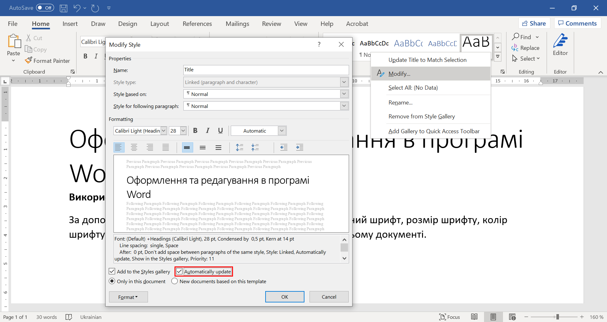
- зробити усі необхідні налаштування формату для тексту самостійно;
- виділити текст;
- на вкладці Home (Головна) у групі Styles (Стилі) розгорнути галерею стилів;
- кліком правої кнопки миші викликати контекстне меню стилю;
- серед пунктів меню обрати – Update … to Match Selection (Оновити відповідно до виділеного фрагмента).
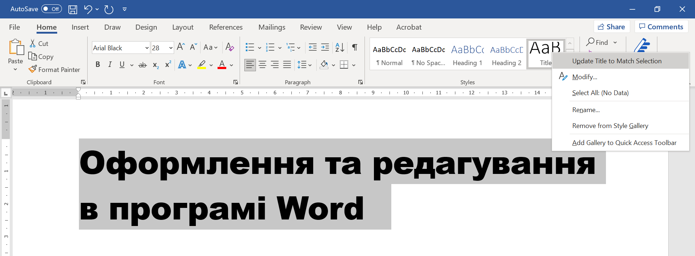
Зауважимо, що при зміні формату стилю – автоматично змінюється і форматування абзаців або символів до яких був застосований даний стиль.
Створення власного стилю.
Якщо необхідно, застосувати параметри форматування, які недоступні в стилях Word, можна створити їх самостійно та вставити в галерею стилів.
Для створення власного стилю треба:
- на вкладці Home (Головна) у групі Styles (Стилі) розгорнути галерею стилів та обрати інструмент Create a Style (Створити стиль);
- у вікні Create New Style from Formatting (Створення стилю за допомоги форматування) вказати у полі Name (Ім’я) нове ім’я стилю;
- для подальшого налаштування формату стилю натиснути кнопку Modifу (Змінити);
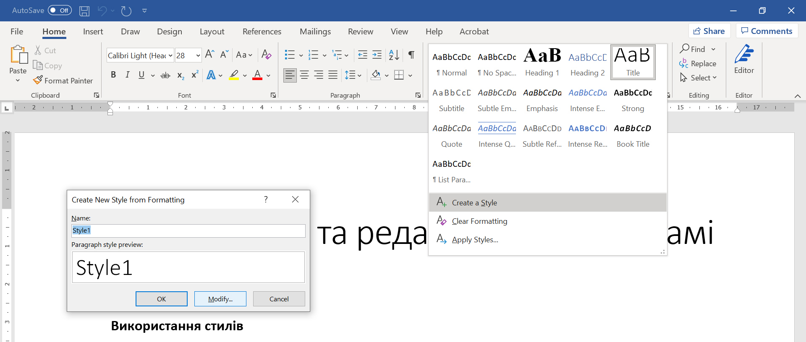
- розгорнути список Style type (Тип стилю) та обрати серед пунктів тип
стилю:
- Paragraph – стиль абзацу;
- Character – стиль символу;
- Linked – зв’язаний стиль;
- Table – стиль таблиці;
- List – стиль списку;
- розгорнути список Style based on (На основі стилю) та обрати серед пунктів стиль, на основі якого буде створений новий стиль, тобто обрати стиль, налаштування якого найбільше підходять під характеристики нового стилю.
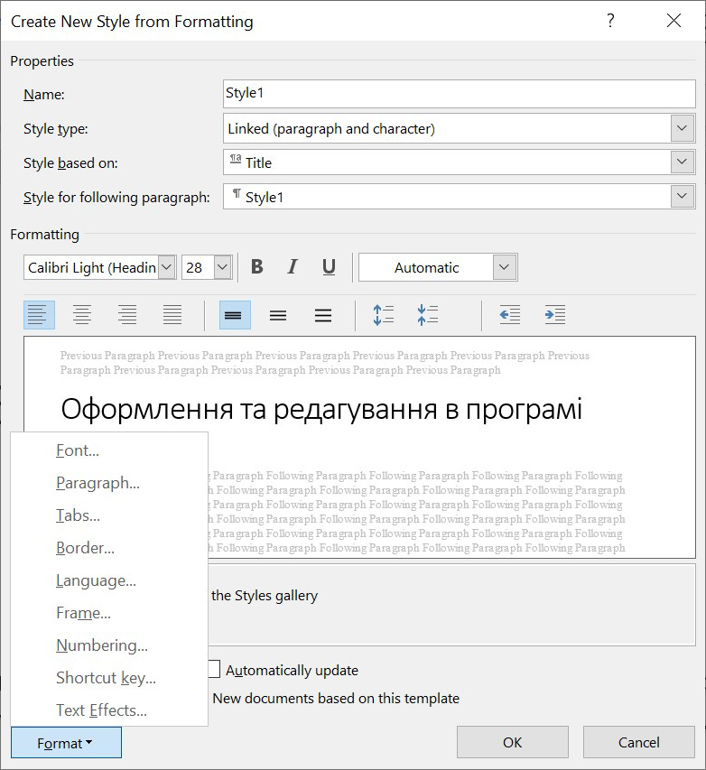
- в групі налаштувань Formatting (Форматування) задати необхідні параметри форматування (набір налаштувань форматування може відрізнятися, в залежності від того який тип буде мати новий стиль);
- кнопка Format (Формат) дозволяє звернутися до набору діалогових вікон, які в свою чергу дають можливість отримати повний набір інструментів щодо налаштування формату стилю;
- навпроти напису Automatically update (Оновлювати автоматично) поставити галочку, в цьому випадку, якщо буде змінено форматування тексту, ці зміни будуть автоматично застосовані і до усього іншого тексту, що був «позначений» тим самим стилем;
- для застосування налаштувань натиснути кнопку ОК;
- новий стиль автоматично з’явиться у групі Styles (Стилі).
Ієрархія стилів.
В Word існує певна ієрархія стилів, тобто кожен новий стиль має бути заснований на деякому стилі, від нього новому стилю передаються усі його налаштування. Таким чином, якщо в стилі більш високого рівня зробити зміни, то вони будуть автоматично відображені в стилях нижчого рівня, але тільки тоді, коли стиль більш низького рівня не включає в себе аналогічні зміни.
Відмітимо, що на верхньому рівні ієрархії знаходиться стиль Normal (Звичайний), оскільки він не базується на жодному зі стилів.
Властивості ієрархії стилів доцільно використовувати при оформленні наукових статей або дослідницьких документів, де потрібно використовувати багато стильових оформлень: заголовки, цитати, назви малюнків, таблиці, тощо. В цьому випадку створюється головний стиль, який містить основні – глобальні параметри оформлення, наприклад, шрифт, міжрядковий інтервал, відступи. А далі, на його основі, створюються стилі нижчого рівня.
Таким чином, якщо треба зміни якісь глобальні налаштування у документі, потрібно буде лише змінити їх для одного стилю, а не для усіх незалежних.
Схема документу.
При роботі з достатньо об’ємними документами, користувач неминуче стикається з потребою швидко здійснювати переходити між розділами цього документу або мати постійний доступ до його структури. Однак, в багатьох випадках, такі документи не мають структури.
Для створення структури потрібно, щоб кожен заголовок в документі був відформатований спеціальним стилем Heading (Заголовок) відповідно до його рівня підпорядкування. Тобто, основні розділи документу повинні мати найвищій (перший) рівень, до них треба застосовувати стиль Heading 1 (Заголовок 1), для підрозділів, застосовують стиль Heading 2 (Заголовок 2) і так далі по ієрархії. Структура документу в Word підтримує до дев'яти рівнів. Найнижчим рівнем є звичайний текст.
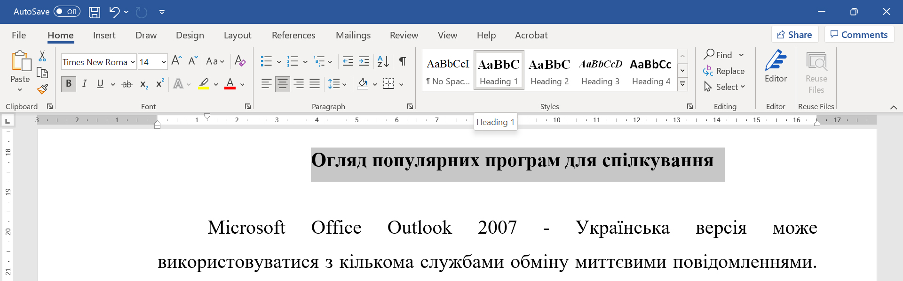
Швидкого встановити стилі заголовків Heading 1 (Заголовок 1), Heading 2 (Заголовок 2) … можна за допомоги клавіатурних скорочень Ctrl + Alt +1 , 2, 3.
Відобразити структурну схему документу можна декількома способами: або перейти до вкладки View (Подання) та у групі Show (Відображення) поставити галочку в чекбоксі навпроти напису Navigation Pane (Область переходів); або натиснути сполучення клавіш Ctrl + F і обрати панель навігації Headings (Заголовоки).
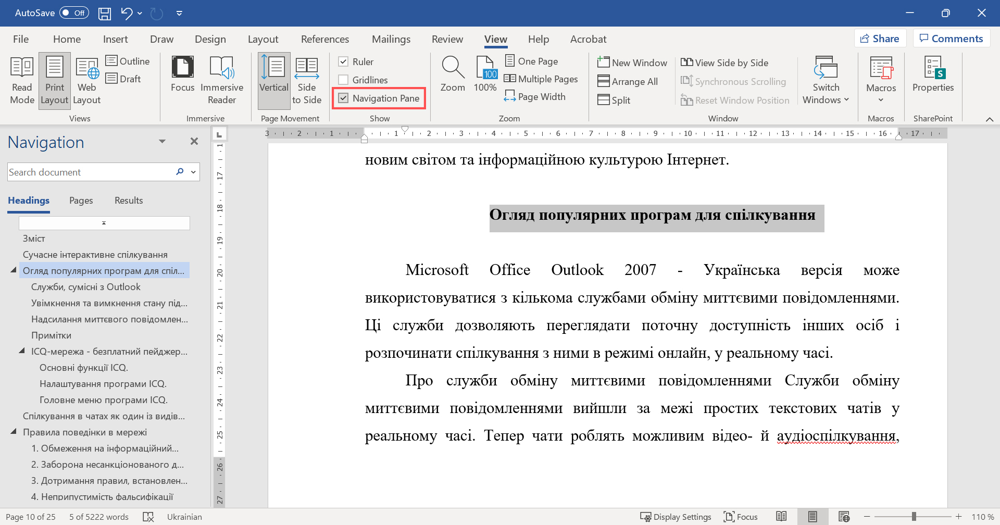
І в тому і в іншому випадку в лівій частині вікна з'явиться спеціальна панель Navigation (Навігація), де буде відображена схема документу. Клік лівої кнопки миші по назві заголовка викликає прокручування документа до потрібного фрагмента.
Панель навігації має певний набір інструментів для роботи із структурою документу. Визвати відповідне меню можна клацнувши по панелі правою кнопкою миші.
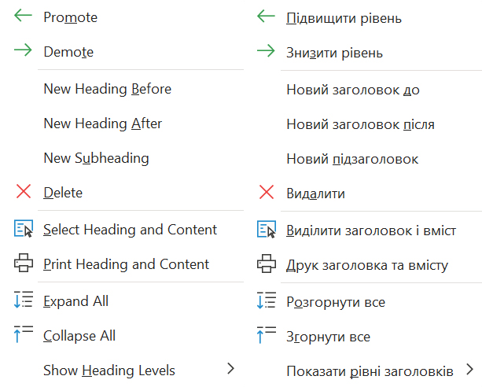
Зверніть увагу, коли документ має структуру, користувач може дуже легко виділити вміст будь-якого розділу або підрозділу та його роздрукувати, якщо ж спробувати перетягнути назву заголовку у схемі документа, переміститься і весь текст самого розділу із внутрішніми підрозділами.
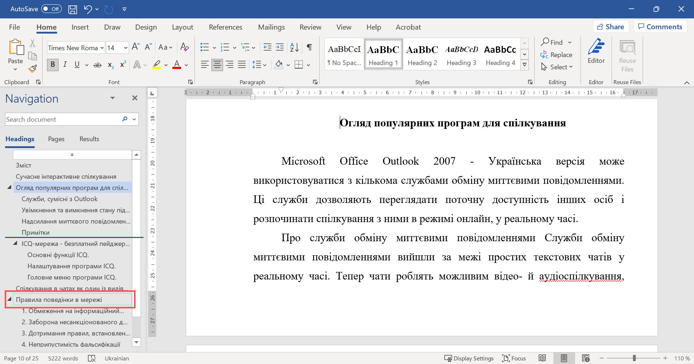